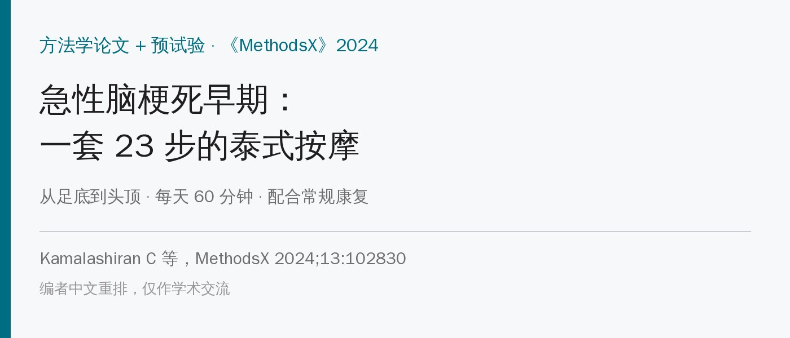
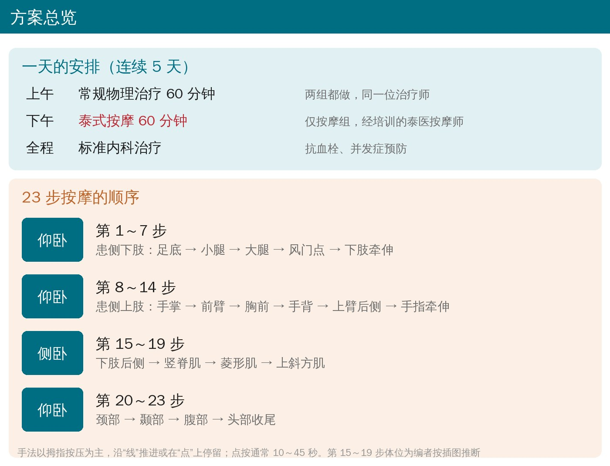
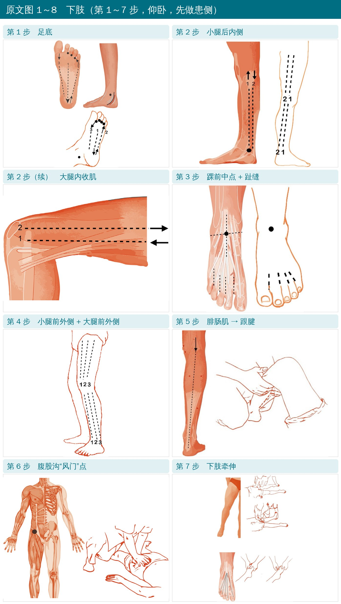
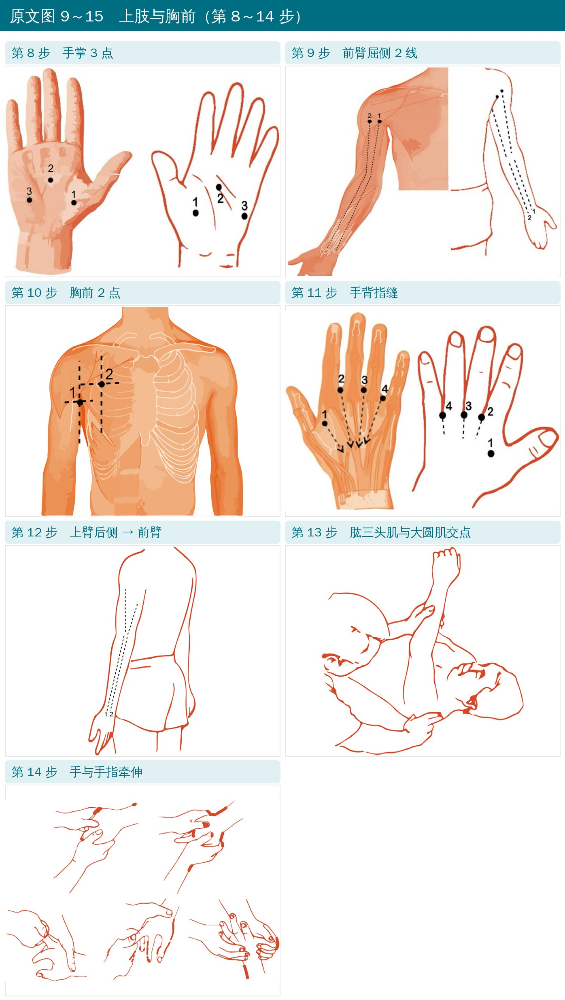
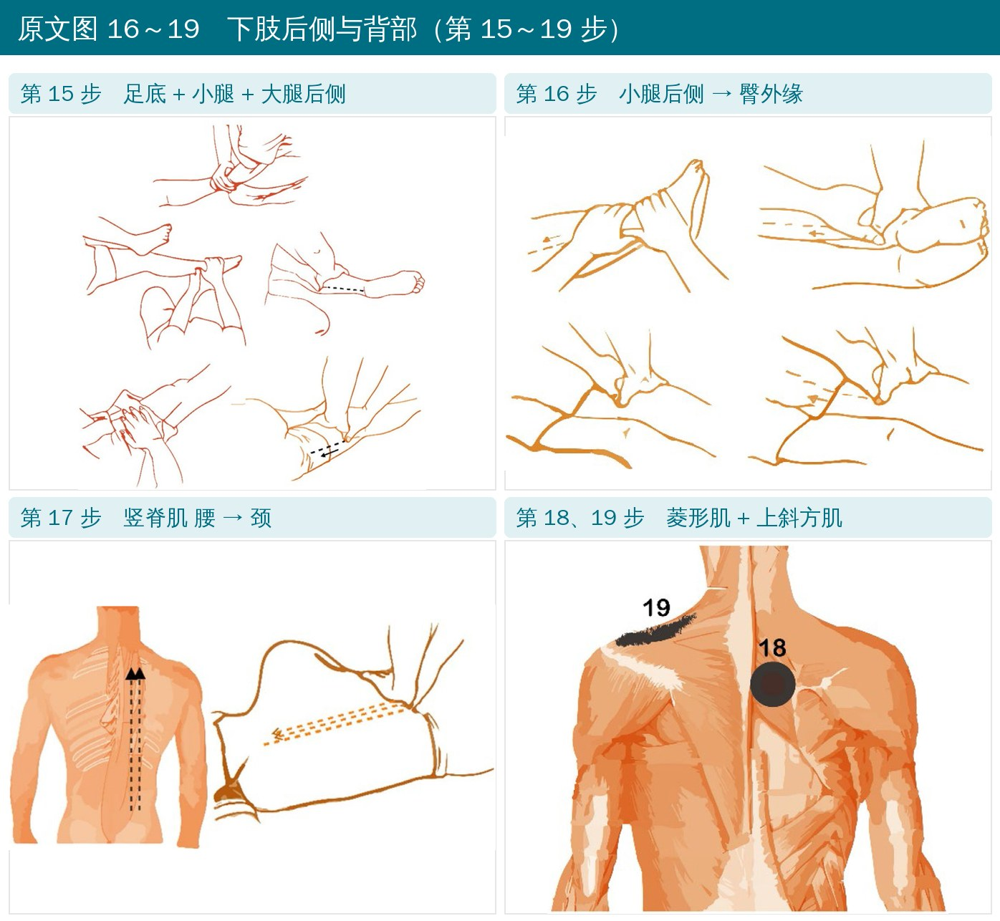
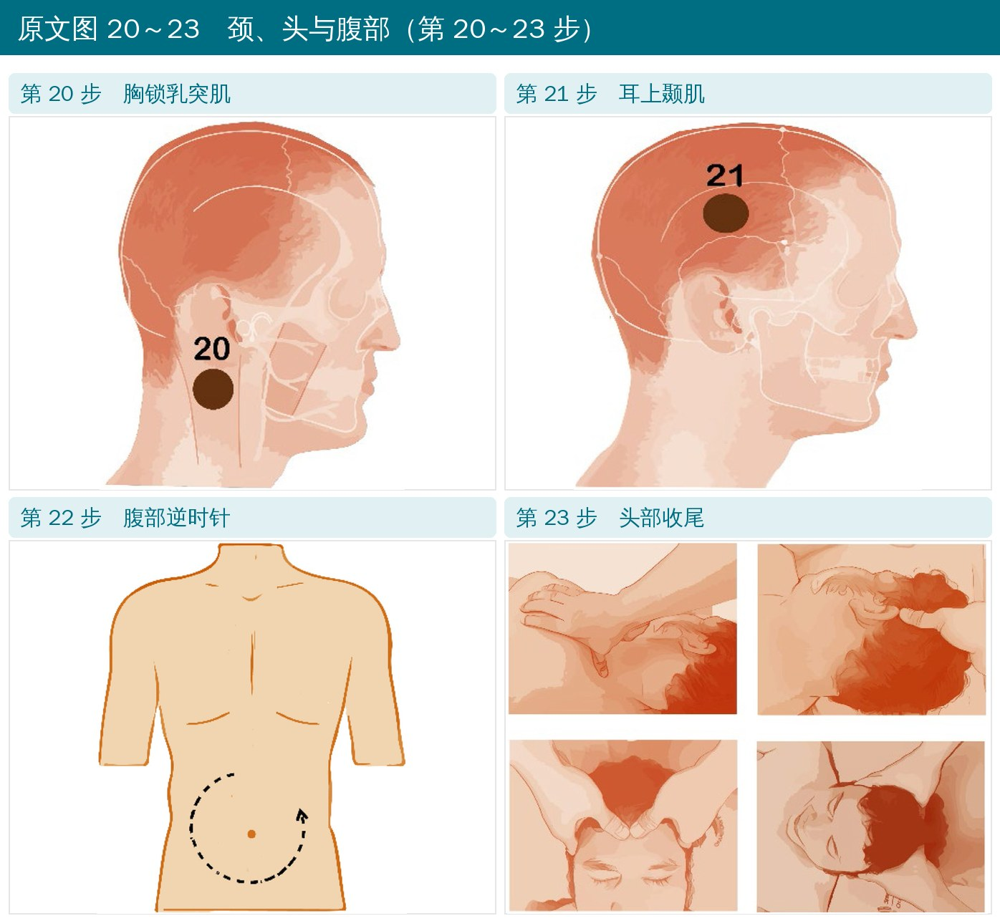
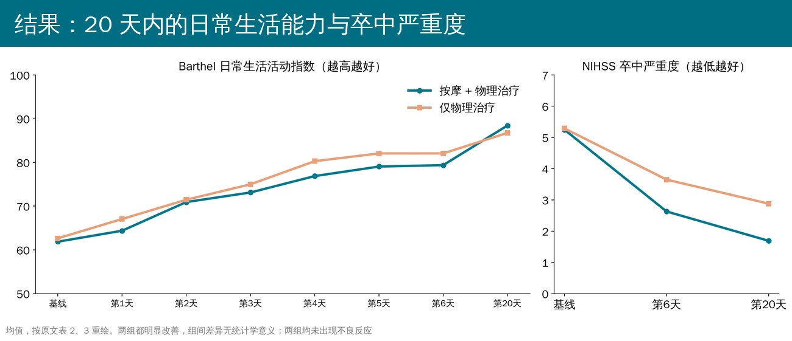

🔖原文信息（编者中文重排）
📚 文献信息
▪ Kamalashiran C, Muengtaweeponsa S, Limudomoporn M, Kaeokoket Y, Eaimworawutthikul W, Sriyakul K, Tungsukruthai P. Traditional Thai massage steps development in acute ischemic stroke patients. MethodsX. 2024;13:102830.
▪ 作者来自泰国法政大学朱拉蓬国际医学院、卒中卓越中心，以及巴真府 Chaophya Abhaibhubejhr 医院（泰医特色医院）
▪ 方法学论文 + 单盲随机对照预试验（泰国临床试验注册 TCTR202000128006）；DOI：10.1016/j.mex.2024.102830
泰式按摩（泰国传统医学按摩，2019 年列入联合国教科文组织非物质文化遗产）在泰国常用于卒中康复，但多是在亚急性、慢性期。Chaophya Abhaibhubejhr 医院把十多年的经验整理成了一套专门针对急性缺血性卒中的 23 步按摩。
这篇论文的主要价值，就是把这 23 步一步步写出来、配了插图；顺带做了一个 33 人的预试验，看急性期加上按摩是否安全、可行。结论：安全、可行，20 天内和单做物理治疗相比没有额外的统计学获益。

🔖方案总览
• 对象：33 名 40～80 岁急性缺血性卒中患者，发病 14 天内，偏瘫不能行走；随机分为按摩组 16 人、对照组 17 人
• 排除：病前日常生活已依赖他人、用过静脉溶栓（rt-PA）、多次卒中、严重失语或意识障碍、心肾衰竭、深静脉血栓、近 1 个月心梗或不稳定心绞痛等
• 两组都接受标准内科治疗，每天上午 60 分钟物理治疗、连续 5 天
• 按摩组每天下午再加 60 分钟泰式按摩，由专门培训过的泰医按摩师按 23 步完成
• 评估（神经科医生）：Barthel 日常生活活动指数、患侧上下肢肌力（每天）；美国国立卫生研究院卒中量表（NIHSS）、卒中专用生活质量量表（第 6 天、第 20 天）
整体规律：先患侧、从远端到近端、从下肢到上肢，再到背部、颈部、头部，最后腹部和头部收尾。手法以双拇指按压为主：沿“线”一路推进，或在“点”上停留 10～45 秒。

🔖原文图 1～8
• 第 1 步 足底：双拇指从前横弓中点沿足底腱膜压向跟骨；再用小鱼际沿小趾展肌从跟骨压回前横弓；双拇指（指尖相抵）依次按压趾缝，从小趾到大趾；最后按压内外踝边缘
• 第 2 步 小腿后内侧 + 大腿内侧：拇指交替按比目鱼肌（从内踝向上到膝）、腓肠肌（向下到跟腱）；大腿内侧两条线——线 1 向上按长收肌、短收肌、大收肌，线 2 向下并深压股薄肌，各重复一遍
• 第 3 步 踝前：双拇指交叉，按压内外踝连线与胫骨交汇的踝前中点，再按趾缝（从小趾到大趾）
• 第 4 步 小腿前外侧 + 大腿前外侧：小腿三条线——胫骨前肌（沿胫骨缘从髌骨下向踝向下压）、趾长伸肌（向上）、腓骨肌（翻手向上）；大腿三条线——股直肌（沿股骨缘）、股外侧肌与髂胫束（向下）、股二头肌（向上）
• 第 5 步 小腿后侧：双拇指分开腓肠肌两头，向下推到跟腱
• 第 6 步 风门点：双掌在腹股沟处的“风门”点按压，每侧持续 45 秒
• 第 7 步 下肢牵伸：① 一手压踝、一手从髋向膝滑动，拉长股四头肌、胫骨前肌、腓骨肌；② 一手托足跟背屈踝，另一手从膝向髋滑动，拉长腘绳肌和小腿三头肌；③ 拇食指从足背中部捏向各趾尖，放松足背

🔖原文图 9～15
• 第 8 步 手掌 3 点：大鱼际、小鱼际、掌心横纹中点，各按 30 秒
• 第 9 步 前臂屈侧：双拇指并拢从肱二头肌向腕推进，跳过肘关节；线 1 沿桡侧腕屈肌、旋前圆肌、掌长肌，线 2 沿肱桡肌
• 第 10 步 胸前 2 点：点 1 在腋前三角肌前束与胸大肌交界处，点 2 在锁骨中线第 2 肋下方（胸小肌处），各按 30 秒
• 第 11 步 手背：拇指按手背骨间肌（指缝），每点 30 秒；再用拇食指从指根到掌背中沟捏压
• 第 12 步 上臂后侧 → 前臂：拇指从肱三头肌向前臂推进；线 1 经尺侧腕屈肌、指屈肌，线 2 经指伸肌、小指伸肌
• 第 13 步 腋后点：拇指按肱三头肌头与大圆肌交界处，30 秒
• 第 14 步 手的牵伸：双拇指撑开手背，再撑开指缝和掌心，牵伸各手指

🔖原文图 16～19
• 第 15 步：用肘按压足底（同第 1 步的线 1、2）；双拇指从踝沿小腿内侧到膝（比目鱼肌），再从跟腱沿小腿后侧到膝；跳过膝关节，继续按腘绳肌中线直到臀缘，到臀部改用掌按
• 第 16 步：双拇指沿小腿后侧靠胫骨缘从踝到膝，再经腘绳肌中线到臀部外缘
• 第 17 步 竖脊肌：双拇指翻手沿髂肋肌从腰部推到颈部
• 第 18、19 步：双拇指交替按菱形肌 10 秒；单拇指按颈侧上斜方肌 10 秒
• 原文未写明这几步的体位，插图看起来是侧卧或俯卧

🔖原文图 20～23
• 第 20 步：单拇指按胸锁乳突肌边缘 10 秒
• 第 21 步：单拇指按耳上方颞肌 10 秒
• 第 22 步 腹部：双手掌根在腹部逆时针按压，从右侧开始，3 圈
• 第 23 步 头部收尾：一手拇指按上斜方肌和耳上颞肌，同时双拇指交替按额肌及头顶（眉心到枕部连线与两耳连线的交点），各 10 秒

🔖Barthel 指数与 NIHSS
• 两组 20 天内日常生活能力、卒中严重度、生活质量、患侧肌力都明显改善
• 组间都没有显著差别；第 20 天按摩组 Barthel 指数 88.4、对照组 86.8，NIHSS 1.7 vs 2.9
• 两组都没有不良反应（肌肉痛、关节痛、疲劳等），没有人退出
• 这套 23 步按摩在急性脑梗死、生命体征稳定的患者身上看起来是安全的，可以作为常规康复之外的舒适性、放松性辅助
• 它不能替代早期的主动康复；5 天、33 人的预试验也看不出能额外加快功能恢复
• 如果要用，注意原文的排除标准：用过溶栓、深静脉血栓、心肾衰竭、近期心梗等不适合
• 手法要点：先患侧、远端到近端；线上推进、点上停留 10～45 秒；跳过关节；力度以患者舒适为准
原文表 1 基线资料
| 项目 | 按摩组（16 人） | 对照组（17 人） | P |
|---|---|---|---|
| 年龄（岁） | 60.92 | 57.00 | 0.283 |
| 男 / 女 | 11 / 5 | 8 / 9 | 0.171 |
| 大动脉病变 | 3（18.75%） | 4（23.53%） | |
| 心源性栓塞 | 4（25%） | 4（23.53%） | |
| 小血管病变 | 2（12.5%） | 3（17.65%） | |
| 病因不明 | 7（43.75%） | 6（35.29%） | |
| 发病当天入组 | 8（50%） | 9（52.94%） | |
| 发病 1 天 | 5（31.25%） | 6（35.29%） | |
| 发病 2 天 | 2（12.5%） | 0 | |
| 发病 3 天 | 0 | 1（5.88%） | |
| 发病 > 3 天 | 1（6.25%） | 1（5.88%） | |
| 改良 Rankin 1 / 2 / 3 分 | 3 / 2 / 9 | 5 / 4 / 8 | 0.624 |
| 高血压 | 9（56.25%） | 11（64.71%） | |
| 糖尿病 | 6（37.5%） | 6（35.3%） | |
| 血脂异常 | 15（93.75%） | 14（82.36%） | |
| 饮酒 | 6（37.5%） | 8（48.32%） | |
| 吸烟 | 6（37.5%） | 8（48.32%） | |
| Barthel 指数 | 61.87 ± 16.80 | 62.64 ± 15.72 | 0.395 |
| 卒中专用生活质量量表 | 163.86 ± 26.18 | 168.82 ± 23.07 | 0.312 |
| NIHSS | 5.29 ± 1.99 | 5.25 ± 1.86 | 0.410 |
原文表 2～6 各时间点均值（按摩组 / 对照组）
| 时间 | Barthel 指数 | NIHSS | 生活质量 | 上肢肌力 | 下肢肌力 |
|---|---|---|---|---|---|
| 基线 | 61.88 / 62.65 | 5.25 / 5.29 | 163.69 / 168.82 | 3.38 / 3.06 | 3.38 / 3.59 |
| 第 1 天 | 64.38 / 67.06 | 3.44 / 3.18 | 3.50 / 3.65 | ||
| 第 2 天 | 70.94 / 71.47 | 3.56 / 3.24 | 3.63 / 3.82 | ||
| 第 3 天 | 73.13 / 75.00 | 3.81 / 3.29 | 3.75 / 3.76 | ||
| 第 4 天 | 76.88 / 80.29 | 3.94 / 3.47 | 3.94 / 4.12 | ||
| 第 5 天 | 79.06 / 82.06 | 3.94 / 3.59 | 4.06 / 4.24 | ||
| 第 6 天 | 79.38 / 82.06 | 2.63 / 3.65 | 190.25 / 189.94 | 4.00 / 3.65 | 4.13 / 4.24 |
| 第 20 天 | 88.44 / 86.76 | 1.69 / 2.88 | 206.31 / 194.88 | 4.19 / 4.12 | 4.31 / 4.53 |
| 组间 P（重复测量方差分析） | 0.780 | 0.262 | 0.719 | 0.492 | 0.579 |
组内随时间变化 P 均 <0.001。
欢迎关注骨科康复小黄公众号，获取更多物理治疗的专业知识！
📄参考文献：
Kamalashiran C, Muengtaweeponsa S, Limudomoporn M, et al. Traditional Thai massage steps development in acute ischemic stroke patients. MethodsX. 2024;13:102830. doi:10.1016/j.mex.2024.102830
原文以 CC BY-NC-ND 4.0 协议开放获取（仅限非商业使用、原则上不允许改编）。本文为学术交流用的中文解读，插图引自原文图 1～23（原图仅含数字和箭头，编者加中文步骤标题），方案卡与结果图为编者中文绘制，表格为编者翻译，版权归原作者与期刊，如有侵权请联系删除。